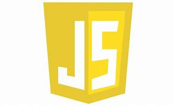

Gerenciamento de tarefas administrativas...

Tenho Excel nível intermediário.

Matplotlib Nível Avançado

PowerPoint Nível Intermediário

Word Nível Intermediário

Sou capaz de desenvolver aplicações web e de escritórios úteis usando Python.

Sou capaz de desenvolver scripts úteis para website voltados para frond-end e node para usar como servidor local.

Sou capaz de desenvolver sites úteis para web, sites estáticos e de exibição.

Campanhas digitais e otimização SEO... Google Search console, Site maps, Instagran, Facebook

- Search Engine Optimization (SEO) - Em PT: Otimização para motores de busca

Google Analytics - Análise de tráfego de sites...

PYTHON e FLASK para analisar dados , analisar, coletar e limpar dados. usando bibliotecas que facilitam o processo em 100%

Para manipular dados e usalo em consultas complexas de dados.

Para armazrnar dados de maneira simples e organizada.
Outlier - geração de áudio para I.A Português para Inglês

Agente de viagens - Auxiliando pessoas a conseguir passa porte com planos de cursos
Assistente virtual - Writer translater freelancer pessoal de um amigo americano

Auxiliar de serviços gerais - Ajudante de descarregamento de produtos de caminhão

Ajudante de pedreiro - Ajudando a encher carrinho de areia , pegar cimentos , baldes de cimentos
PROJETOS: PYTHON
Agendas comuns com banco de dados.
Formulários com banco de dados , com hora e despertador.
Leitor PDF com áudio.
Script para enviar mensagens de Email com body responsivo pra mais de 20.000 pessoas "dependendo da quantia de Emails é possível até mais".
Tradutor de áudio para txt,rtf ou srt.
Transformador de textos em áudios speach voz humana ou robótica, ou semelhante a humana.
Árvore de decisão e regressão linear.
Machin Learning.
Machin Learning com estátistica e probrabilidade.
Regressão linear.
SRT para áudio em qualquer idioma.
Cortar bordas de vídeos.
Transformar texto em PDF.
Transformar texto UTF-8 em texto cp1235.
Fromulários com banco de dados , com hora e despertador.
Planilhas de Despesas.
Dashboard gráficos.
Dashboard semidinamico.
Relógios.
Calculadora
App semelhante ao Wordpad.
App de edição de vídeos.
PROJETOS: FLASK
Formulários com banco de dados.
Aplicação de Chat com banco de dados , possível enviar fotos e vídeos.
Aplicação escreva a sua história, foto história, salvasse com banco de dados.
Dashboard leitor de planilhas Excel.
Dashboard informador de dados de planilhas excel e csv
Login com banco de dados.
Formulário Dashboard online com Dash.
informação de Dados.
PROJETOS: HTML-CSS,JAVASCRIPT
Site de curso para 25 idiomas diferentes.
Lojas de roupa.
Loja de artigos religiosos.
Formulário Pessoal.
Site de conteúdo adulto.
Site de jogos.
Portifólio pessoal com login e senha.
Site para Clinica.
Site para Oficina.
Planilha de cálculo de despesas.